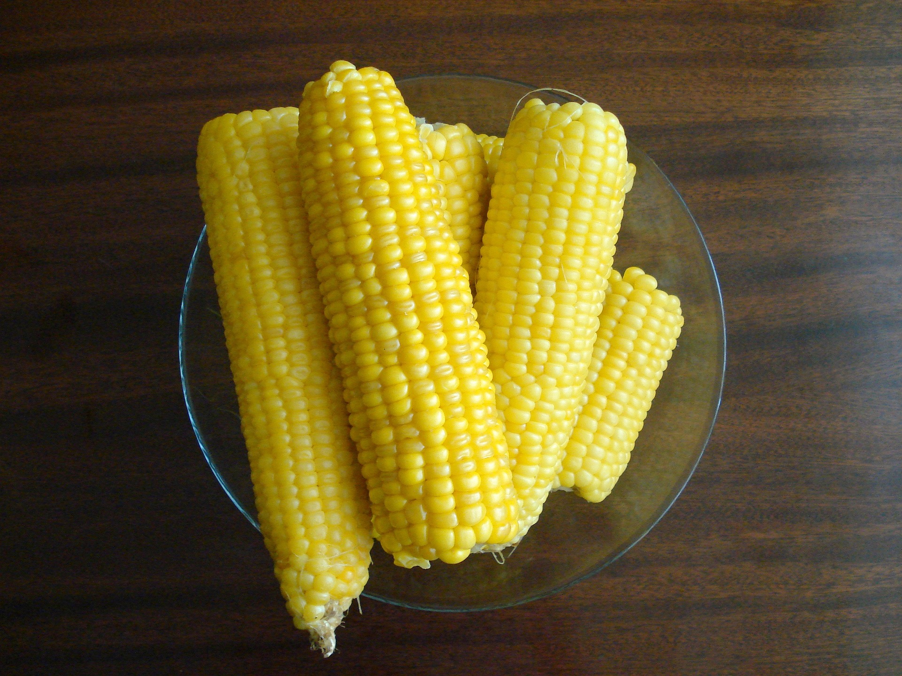

One of summer's sweetest treats is the humble ear of corn. It's versatile, inexpensive, and utterly delicious. And who doesn't want a juicy piece of corn to accompany every summer meal? You can’t go wrong with boiled corn on the cob — and this top-rated recipe is proof of that!